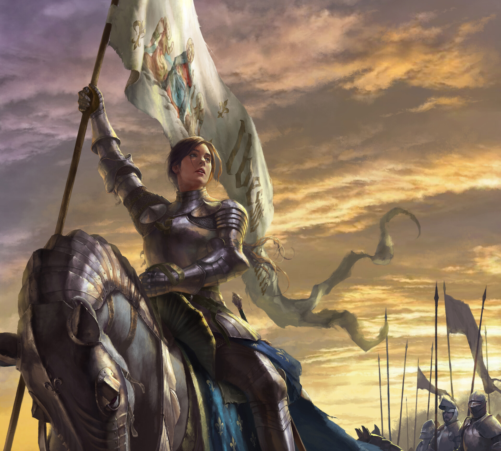

L'Inquisition
Organisation :
Un grand inquisiteur dirige les troupes, mais il est sous la supervision du conseil de Guénazar.
Dirigeant :
Le grand inquisiteur est élu justement par le conseil.
Nombres de membres :
Un cinquième de la population du Sufle (ce qui représente 3 fois plus que l'organisation Arias).
Mots d'ordre :
L'inquisition amène d'après elle l'organisation et la structure qui plaît tant à Ysiiri et l'institution religieuse.
Recrutement :
Des test et des formations sont passées pour rejoindre le groupe. C'est un travail rémunéré mais il ne faut pas avoir de casier judiciaire et être pieux.
Lieu de rassemblement :
Différents bâtiments administratifs.
L’Inquisition de Guénazar est constituée des gardes de Sufle mais aussi de soldats lourdement armés et entraînés. Leurs opérations, orchestrées par le gouvernement en place, constituent principalement à maintenir intacte la frontière entre la ville basse de Doème et la ville haute.
Pour ce faire, ils n’hésitent pas à descendre dans les profondeurs de la cité pour rappeler qui détient le pouvoir, par la force et les prières. La surveillance constante, y compris au sein de Sufle, est synonyme de débat pour le peuple ; contrôle abusif, ou ailes bienveillantes, protectrices ? L'organisme, profondément pieux, tout comme la globalité des citoyens qu’il protège ou afflige, vénère Ysiiri et porte son symbole sur ses étendards et les armures qu’arborent ses membres ; un œil implémenté au cœur de rayons solaires. Pour se rapprocher d’autant plus du déité par les teintes, les inquisiteurs ont des tenues principalement dans les tons clairs, jaunes et blanches, avec quelques nuances grises.
En plus de servir de garde-fous et de s’occuper de la collecte des impôts, différentes ailes de l’Inquisition sont dédiées à la force militaire pure, en cas d’attaque d’autres nations ou du retour de Ga’ar, avide de prendre toujours plus aux Hommes. Leurs entraînements sont rigoureux et réguliers, et la propagande fusant dans les rues incite fortement les jeunes à s’enrôler, leur promettant monts et merveilles, parmi lesquels se trouvent un logement et une hygiène de vie financée par un salaire ample. En sommes, l’Inquisition est la lame de la république Guénézarienne, et n’a pour seule limite les paroles divines.